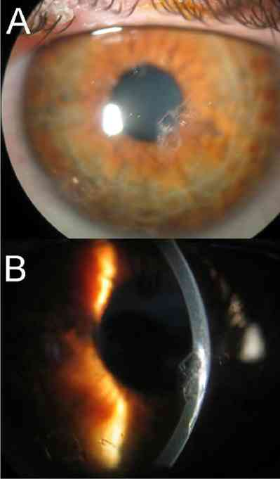

Bienvenue Sur Medical Education
Douleur oculaire
Spécialité : ophtalmologie / pédiatrie / symptômes /
Points importants
-
La douleur oculaire résulte de : (seul ou combinés)
-
la stimulation des terminaisons nerveuses sensitives cornéennes
-
l'inflammation oculaire (intraoculaire, paroi oculaire, surface oculaire)
-
l'hypertonie intraoculaire
-
Différencier les types de douleur oculaire :
-
sensation de CE, le plus souvent « grain de sable »
-
douleur sourde (paroi oculaire, tissus intra-oculaires, tête du nerf optique)
-
douleur violente + blépharospasme + larmoiement (surface oculaire, hypertonie aigue)
-
Eliminer une douleur non oculaire (rétro-oculaire, périorbitaire, sinusienne, trigéminée, céphalée frontale, gène visuelle interprétée comme une douleur)
-
Rechercher une baisse d'acuité visuelle associée impliquant un avis ophtalmologique urgent
Présentation clinique / CIMU
SIGNES FONCTIONNELS
- la stimulation des terminaisons nerveuses sensitives cornéennes
- l'inflammation oculaire (intraoculaire, paroi oculaire, surface oculaire)
- l'hypertonie intraoculaire
- sensation de CE, le plus souvent « grain de sable »
- douleur sourde (paroi oculaire, tissus intra-oculaires, tête du nerf optique)
- douleur violente + blépharospasme + larmoiement (surface oculaire, hypertonie aigue)
Présentation clinique / CIMU
SIGNES FONCTIONNELS
Généraux : inconstants
- Nausées, vomissements, insomnie
CONTEXTE
Terrain : fonction de l'étiologie
- Hypermétrope = glaucome aigu à angle fermé
- Connectivite = uvéite, sclérite
- Traumatisme = hypertonie, abrasion épithéliale cornéenne
Traitement usuel : selon étiologie
-
L'efficacité antalgique d'un traitement est conditionnée par l'identification de l'origine de la douleur. Le principe antalgique le plus efficace est, quand l'origine de la douleur provient de :
- la stimulation des terminaisons nerveuses sensitives cornéennes : l'association de mydriatique et la couverture de la surface cornéenne (lentille pansement, pansement occlusif)
- l'inflammation oculaire : l'association de mydriatique et d'anti-inflammatoires locaux
- l'hypertonie intraoculaire : l'association d'hypotonisants locaux et généraux
Antécédents : selon étiologie
-
Si oeil rouge + baisse acuité visuelle :
- traumatisme, ulcère de cornée => kératite (toxique, infectieuse)
- maladie de système (granulomatose++), connectivite => uvéite antérieure
- épisode de douleur transitoire à l'obscurité de résolution spontanée => glaucome aigu par fermeture de l'angle (GAFA)
- diabète, oeil multiopéré => glaucome néovasculaire
-
Si oeil rouge sans baisse acuité visuelle :
- aucun => CE sous-palpébral supérieur
- conjonctivite antécédente récente, atopie, nourrisson => conjonctivite (plutôt sensation de CE que douleur franche)
- connectivite => épisclérite
- connectivite => sclérite antérieure
-
Si oeil blanc sans baisse acuité visuelle :
- exogénose, SEP => névrite optique rétrobulbaire au stade précoce
- aucun => troubles de la réfraction et/ou de l'accommodation
Facteurs de risque
-
Si oeil rouge + baisse acuité visuelle :
- exposition à risque, port de lentille de contact => kératite (toxique, infectieuse)
- herpès V1, toxoplasmose, granulomatose évolutive, épisode d'uvéite => uvéite antérieure
- hypermétropie, cataracte ancienne => glaucome aigu par fermeture de l'angle (GAFA)
- occlusion de la veine centrale de la rétine => glaucome néovasculaire
-
Si oeil rouge sans baisse acuité visuelle :
- traumatisme, contexte professionnel (meulage, percussion), 2 roues => CE sous-palpébral supérieur
- contage de l'entourage, printemps, manipulation de toxiques => conjonctivite (plutôt sensation de CE que douleur franche)
- femme, 5e décade => épisclérite
- femme jeune => sclérite antérieure
-
Si oeil blanc sans baisse acuité visuelle :
- consommation aiguë d'alcool => névrite optique rétrobulbaire au stade précoce
- patient de la quarantaine non corrigé de près et ayant toujours bien vu de loin sans correction, enfant strabique intermittent (phorie) => troubles de la réfraction et/ou de l'accommodation
Circonstances de survenue
- Traumatisme
- Port de lentille de contact
EXAMEN CLINIQUE
-
Recherche des signes associés à la douleur orientant le diagnostic et la CAT immédiate :
-
examen de la surface oculaire :
- oeil rouge
- cercle périkératique
- transparence cornéenne (oedème, CE, abcès)
- port de lentilles de contact
-
inverser le tarse de la paupière supérieure : vérifie l'absence de CE dans le cul-de-sac conjonctival supérieur (insecte, lentille de contact...)
-  _32 Photo Corps étranger intracornéen
- baisse d'acuité visuelle (BAV)
-
examen de la pupille :
- semi-mydriase
- réflexe pupillaire
- déformation (par synéchies)
- palpation bidigitale du globe (recherche une hypertonie, comparé à l'autre oeil)
-
examen de la surface oculaire :
CIMU
-
Tri 2
Diagnostic étiologique
Si oeil rouge + baisse acuité visuelle
- Kératite (toxique, infectieuse)
- Uvéite antérieure
- Glaucome aigu par fermeture de l'angle (GAFA)
- Glaucome néovasculaire
Si oeil rouge sans baisse acuité visuelle
- CE sous-palpébral supérieur
- Conjonctivite (plutôt sensation de CE que douleur franche)
- Episclérite
- Sclérite antérieure
Si oeil blanc sans baisse acuité visuelle
- Uvéite ou névrite optique rétrobulbaire au stade précoce
-
Troubles de la réfraction et/ou de l'accommodation
Diagnostic différentiel
-
Douleur non oculaire (rétro-oculaire, périorbitaire, sinusienne, trigéminée, céphalée frontale, gène visuelle interprétée comme une douleur)
Traitement
TRAITEMENT PREHOSPITALIER / INTRAHOSPITALIER
Traitement
TRAITEMENT PREHOSPITALIER / INTRAHOSPITALIER
Stabilisation initiale
- Antiémétiques
- Antalgiques de classe 2
- Traitement étiologique
Suivi du traitement
- Consultation ophtalmologique urgente si oeil rouge et/ou baisse de l'acuité visuelle
MEDICAMENTS
- Traitement de l'étiologie prescrit par l'ophtalmologiste
-
En l'absence de nausées :
- paracétamol (500 mg) + codéine (30 mg) : 1 à 2 cp x 3/j
-
Si nausées ou vomissement :
- métoclopramide, injection intramusculaire 10 mg
Surveillance
CLINIQUE
-
Intensité de la douleur sur EVA ou EN
-
Evolution de la baisse d'acuité visuelle et de la rougeur oculaire
PARACLINIQUE
-
En cas d'abcès cornéen, un écouvillonnage bactériologique (coton tige stérile ensemençant un milieu de culture en tube) doit précéder la prescription de collyre antibiotique
-
CRP en fonction du contexte
Devenir / orientation
CRITERES D'ADMISSION
Devenir / orientation
CRITERES D'ADMISSION
Idéalement, l'examen ophtalmologique oriente le patient en fonction du diagnostic étiologique
Le patient doit être orienté dès que possible vers un ophtalmologiste, en son absence
-
Si oeil rouge + baisse acuité visuelle :
- kératite (toxique, infectieuse) : sortie, ordonnance de sortie 1
- uvéite antérieure : sortie, ordonnance de sortie 2, après élimination formelle d'un herpès oculaire
- glaucome aigu par fermeture de l'angle (GAFA) : admission si l'hypertonie ne cède pas après trois heures suivant le premier traitement hypotonisant
- glaucome néovasculaire : sortie, ordonnance de sortie à base d'antalgiques forts (analogues morphiniques type Topalgic®)
-
Si oeil rouge sans baisse acuité visuelle :
- CE sous-palpébral supérieur : sortie, ordonnance de sortie d'abrasion cornéenne
- conjonctivite (plutôt sensation de CE que douleur franche) : sortie, ordonnance de sortie 3
- épisclérite et sclérite antérieure : sortie, prise en charge d'une pathologie associée systémique si besoin
-
Si oeil blanc sans baisse acuité visuelle :
- uvéite ou névrite optique rétrobulbaire au stade précoce : sortie
- troubles de la réfraction et/ou de l'accommodation : sortie
CRITERES DE SORTIE
- Baisse de l'acuité visuelle et ou rougeur oculaire : consultation ophtalmologique urgente
- Sinon : consultation ophtalmologique standard
ORDONNANCE DE SORTIE
- Si et seulement si aucun ophtalmologiste n'est accessible
- Cf. critères de sortie, fonction de l'étiologie
Ordonnance de sortie 1 : pour 48 heures maximum (avant consultation ophtalmologique)
- Collyre antibiotique large spectre seul (ex rifamycine collyre 1x3/j ou Azyter® 1x3/j)
- Pommade antibiotique la nuit (ex rifamycine pommade ophtalmique : le soir)
- Rondelle oculaire pansement occlusive non compressive + sparadrap hypoallegénique
Ordonnance de sortie 2
-
Collyre corticoide dexaméthasone (ex Chibro-Cadron®) :
- 1 gtte/h le jour pendant le premier jour puis
- 1 gtte x 6/j le jour pendant 3 jours puis
- 1 gtte x 3/j le jour pendant 3 jours puis
- 1 gtte x 2/j le jour pendant 3 jours puis
- 1 gtte x 1/j le jour pendant 3 jours puis ARRET
- Pommade corticoïde le soir (ex : Ster-dex®) pendant 3 jours
-
Tropicamide collyre :
- 1 gtte x 3/j le jour pendant 3 jours puis arrêt (dilate la pupille)
Ordonnance de sortie 3
- Rinçage au sérum physiologique avant instillation de collyre
- Collyre antiseptique (ex : Vitabact®, 1 gtte x 4/j pendant 5 jours)
- Collyre anti-inflammatoire unidose (ex : Dicloced®, Indocollyre®, Ocufen®, Voltarène®...1 gtte x 4/j pendant 5 jours)
RECOMMANDATIONS DE SORTIE
Selon étiologie
- Si origine infectieuse : mesure d'hygiène (ne pas embrasser, pas de poignée de main, mouchoirs jetables, lavage des mains...), arrêt de port de lentilles de contact avant avis ophtalmologiste de guérison (conserver les lentilles pour éventuelle analyse au besoin)
- Voir un ophtalmologiste dès que possible
- Si corps étranger, port de lunettes de protection, déclaration d'accident du travail (CMI)
- Si patient dilaté : ne pas conduire tant que dure la dilatation, porter une protection solaire (lunettes de soleil indice 3 minimum)
Mécanisme / description
La douleur oculaire résulte de : (seul ou combinés)
- La stimulation des nerfs sensitifs cornéens dont les terminaisons sont situées dans l'épithélium de la cornée. Lorsque l'épithélium cornéen est lésé, ces terminaisons sont exposées. La stimulation des efférences neurosensitives conjonctivales produit une sensation de corps étranger (impression de grain de sable sous la paupière)
- L'inflammation oculaire (intraoculaire, paroi oculaire, surface oculaire)
- L'hypertonie intraoculaire qui stimule les efférences neurosensitives au niveau de l'iris et du corps ciliaire
Bibliographie
-
Collège des Ophtalmologistes Universitaires de France. Polycopié National. Œil rouge et douloureux. 2008-2009, chap 16, pp113-124
Auteur(s) : Jean-Louis BOURGES